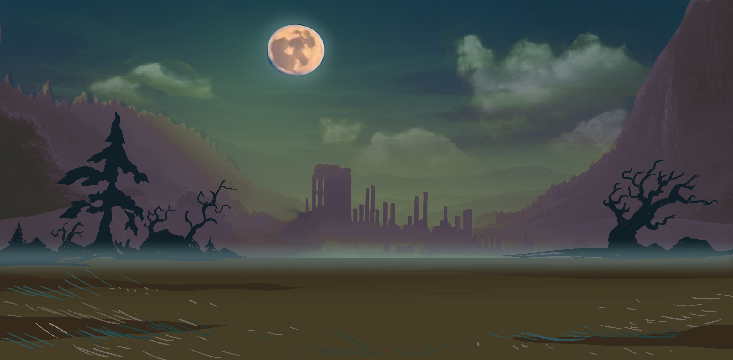

The Legend of the Forsaken Realm

"The world teeters on the brink of ruin, its life force slowly drained by an ancient demigod lurking in a cursed and forsaken realm. Shielded by three mighty guardians, this monstrous entity feasts upon the planet's essence, leaving despair and decay in its wake. Humanity has surrendered to its fate, its hope extinguished - until a lone warrior rises. Unafraid and unbroken, this defiant soul embarks on a perilous quest to challenge the guardians, one by one, in brutal combat. Their goal: to reach the heart of darkness and face the ravenous demigod in a final battle that will decide the fate of the world. Will they succeed where all others have failed, or will they too be consumed by the abyss?" The fight for survival begins. |
|